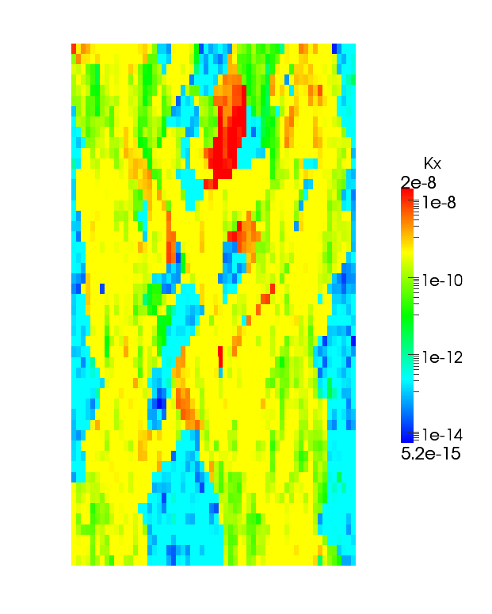

SPE 10 Layer 85¶
Solution to two-phase flow in a heterogeneous medium. The peremeability is the 85th layer of the SPE10 benchmark problem.

|
 |
{kind=link}
import mimpy.mesh.hexmesh as hexmesh
import mimpy.models.twophase as twophase
import numpy as np
def res_k(p, i, j, k):
return np.eye(3)
res_mesh = hexmesh.HexMesh()
permfile = open("spe_perm_layer85.dat")
res_mesh.build_mesh(50, 1, 60, 670., .6, 365., res_k)
Kx = []
Ky = []
Kz = []
for cell_index in range(res_mesh.get_number_of_cells()):
line = permfile.readline()
line = line.split()
line = map(float, line)
Kx.append(line[0])
Ky.append(line[1])
Kz.append(line[2])
current_k = line[0]*np.eye(3)
current_k *= 1.e-12
res_mesh.set_cell_k((cell_index%60)*50+cell_index/60, current_k)
res_mesh.output_vtk_mesh("spe_10_mesh",
[res_mesh.get_all_k_entry(0, 0),
res_mesh.get_all_k_entry(1, 1)],
["Kx", "Ky"])
res_twophase = twophase.TwoPhase()
res_twophase.set_mesh(res_mesh)
res_twophase.apply_flux_boundary_from_function(0, lambda p:np.array([0.,0.,0.]))
res_twophase.apply_flux_boundary_from_function(1, lambda p:np.array([0.,0.,0.]))
res_twophase.apply_flux_boundary_from_function(2, lambda p:np.array([0.,0.,0.]))
res_twophase.apply_flux_boundary_from_function(3, lambda p:np.array([0.,0.,0.]))
res_twophase.apply_flux_boundary_from_function(4, lambda p:np.array([0.,0.,0.]))
res_twophase.apply_flux_boundary_from_function(5, lambda p:np.array([0.,0.,0.]))
res_twophase.set_model_name("spe_10_")
res_twophase.set_initial_p_o(np.array([0.]*res_mesh.get_number_of_cells()))
res_twophase.set_initial_s_w(np.array([0.]*res_mesh.get_number_of_cells()))
res_twophase.set_porosities(np.array([.3]*res_mesh.get_number_of_cells()))
res_twophase.set_viscosity_water(8.90e-4)
res_twophase.set_viscosity_oil(8.90e-4)
res_twophase.set_compressibility_water(1.e-9)
res_twophase.set_compressibility_oil(1.e-9)
res_twophase.set_ref_density_water(1000.)
res_twophase.set_ref_density_oil(1000.)
res_twophase.set_ref_pressure_oil(0.)
res_twophase.set_ref_pressure_water(0.)
res_twophase.set_residual_saturation_water(.0)
res_twophase.set_residual_saturation_oil(.2)
res_twophase.set_corey_relperm(2., 2.)
well_location1 = res_mesh.find_cell_near_point(np.array([0., 0., 365.]))
well_location2 = res_mesh.find_cell_near_point(np.array([670., 0., 0.]))
res_twophase.add_rate_well(1.e-1, 0., well_location1, "WELL1")
res_twophase.add_pressure_well(3000., 1.e-13, well_location2, "WELL2")
res_twophase.initialize_system()
res_twophase.set_time_step_size(3.e5)
res_twophase.set_output_frequency(100)
res_twophase.set_number_of_time_steps(1000)
res_twophase.set_saturation_substeps(3)
res_twophase.start_solving()